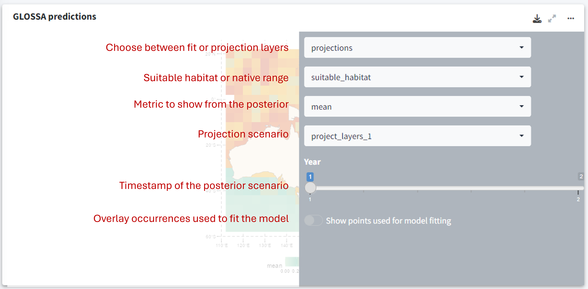

Get started
Welcome to GLOSSA, our Shiny app for species distribution modeling! This tool allows you to predict species distributions using occurrence data and environmental data. Below is a quick guide to help you get started. Please ensure that you have R version 4.0.0 or higher installed before proceeding:
Installation
To install the GLOSSA shiny app, run the following command in your R console:
install.packages("glossa")Alternatively, you can install the latest development version from GitHub to get the newest updates and fixes:
if (!require("devtools"))
install.packages("devtools")
devtools::install_github("jmestret/glossa")GLOSSA workflow summary
- Data input:
- Load species occurrence data: Upload species occurrence data, either presence-absence or presence-only (with pseudo-absences generated). Multiple species can be modeled in one session.
- Upload environmental data: Provide environmental variables in raster format, used as predictors in the model. These layers also define the study area unless a polygon is provided.
- Upload projection layers: Optionally, upload layers to forecast for different time periods or climate scenarios.
- Define study area: Optionally, upload a polygon to define the study area, which will filter occurrences and crop environmental layers.
- Data processing:
- Coordinate cleaning: GLOSSA cleans coordinates by removing duplicates and points outside the study area.
- Layers processing: Environmental layers are cropped, masked, and optionally standardized using Z-score.
- Generate pseudo-absences: For presence-only data, pseudo-absences are randomly generated.
- Model fitting and Pprediction:
- Fit BART model: Two models are fitted—one based on environmental data and another including spatial smoothing.
- Model output: Predict species occurrence probabilities and determine optimal classification cutoffs. Evaluate predictive performance using cross-validation, and assess variable importance and functional responses.
- Projections: Generate projections for different areas, time periods, and climate scenarios using the Bayesian framework.
- Visualization and export:
- Explore and save interactive results once the analysis is complete.
Quick start guide
Here’s a quick guide on how to use the app. First, launch the app by running the run_glossa() function:
library(glossa)
run_glossa()This will open the app on the Home tab, the landing page of the app. From here, you can start a new analysis, watch our demo video, explore the documentation, read tutorials, or even meet the team that built the app!
Clicking on the question mark icon  on the top right corner will bring up a brief explanation of what each tab and button does.
on the top right corner will bring up a brief explanation of what each tab and button does.
Running your first analysis
To run your first analysis, go to the New Analysis tab. This tab looks like this:
Here, you need to upload the required input files and select your analysis options:
- Data upload: The first panel is where you upload your data and configure the analysis settings.
- Previsualization: The second panel provides an interactive map to preview your input data.
- Predictor variables: Choose predictor variables for each uploaded species.
- Uploaded files: A table indicates if your input files are formatted correctly.
Required files for analysis
GLOSSA can function with just occurrence data and environmental variables, but additional options are available. Let’s briefly go through the necessary files:
Occurrences: Upload a tab-separated CSV file with four columns indicating the occurrence location, whether it is a presence or absence, and the time it was recorded. The columns must be named exactly as follows:
decimalLongitude,decimalLatitude,pa, andtimestamp. If thepacolumn is missing, GLOSSA will assume all rows are presences. Iftimestampis missing, GLOSSA will assume all observations occurred at the same time. GLOSSA also supports presence-only data but will generate randomly distributed balanced pseudo-absences to fit the model.> head(sp1) decimalLongitude decimalLatitude timestamp pa 1 5.42909 43.20937 1 1 2 -43.05 49.03 1 0 3 -2.52369 47.29234 2 1 4 34.054 -26.913 2 1 5 -41.63 46.3 2 0 6 -174.5 27.5 3 1Environmental data: Upload environmental data as raster files (e.g., .tif or .nc format) in a ZIP file with a specific structure. The ZIP file should contain a subdirectory for each environmental variable, with files sorted by time period. For example, if you have two variables (
x1andx2) and your observations are from two different years, your ZIP file should look like this:fit_layers.zip ├───x1 │ x1_1.tif │ x1_2.tif └───x2 x2_1.tif x2_2.tifEnsure that all layers have the same resolution, the same number of layers, and that they match the number of years in your occurrence files. If you want to use the same layer for all observations, include just one file in the subdirectory and set all
timestampvalues to 1 or remove thetimestampcolumn.Projection layers (Optional): If you want to make predictions, upload your projection data here. This file has the same format as the environmental data file, and the subdirectories must match those used for fitting the model. You can upload multiple ZIP files if you want to predict multiple scenarios (e.g., different temperature increase scenarios).
Study area (Optional): If your rasters cover a larger area than your study region, you can provide a polygon to delimit your study area (formats: GPKG, KML or GeoJSON). This will remove points outside the polygon and mask the environmental variables accordingly.
Once all files are uploaded, if they pass the checks and are properly formatted, the table in the bottom right panel will show a checkmark for each file. If something is incorrect, refer to the documentation for a quick solution.
Analysis options
In this section, you need to select the desired output. GLOSSA fits two kinds of models:
- Native range: The model includes environmental variables and uses longitude and latitude coordinates as a spatial smoother.
- Suitable habitat: The model only includes the environmental variables.
You can choose to fit the model under the Model fitting option. This option will fit the model, compute variable importance, and generate a prediction map representing the mean environmental conditions across all provided layers. If you’ve uploaded projection layers and want to make predictions using the fitted model, select the Model projection option.
When fitting the model, if multiple years or time periods are uploaded, GLOSSA will extract the value of the corresponding environmental layer for each occurrence based on the specific time stamp.
Additionally, you can check the Functional responses checkbox if you want to compute the response curves (i.e., the relationship between the occurrence of a species and each environmental variable). You can also enable Cross-validation, which will perform a K-fold cross-validation with (k = 5).
Advanced options
By selecting the Advanced options button, a sidebar will appear with extra options for refining your analysis:
Occurrences thinning: Specify the number of decimal places to round coordinates, allowing you to apply spatial thinning to your occurrence data using a precision-based method. GLOSSA currently implements this method via the GeoThinneR R package, which is the most time- and memory-efficient option for large datasets. If you need to perform spatial thinning based on distance or a grid, you can do so before uploading your data to GLOSSA using GeoThinneR or other methods.
Standardize covariates: GLOSSA uses a scaling method that subtracts the mean and divides by the standard deviation for standardization. The mean and standard deviation are calculated from the fitting layers, and the same values are used to standardize the projection layers, ensuring consistency across variables.
Enlarge polygon: If your polygon has low resolution, you can apply a buffer in degrees to expand it. This is useful if you have points near the coast that fall outside the polygon due to poor resolution. You can preview the buffer using the “play” icon before running the analysis to find the optimal value.
Model: Choose the model to apply. Currently, GLOSSA only supports the BART model, so no additional selection is needed here.
Set a seed: Specify a seed for reproducibility of your results.
Predictor variables
If you uploaded multiple species, you can select different predictor variables for each species in the bottom left panel.

Uploaded files
In the table in the bottom right corner, ensure that all files are checked and that you’ve selected your analysis options.
Once everything is set, you’re ready to run the analysis. Click the Run Job button, confirm in the dialog, and wait for the analysis to complete.
Analysis results
Once the analysis is complete, you will be redirected to the Reports tab, where you can explore all the results and export visualizations .
In the top left corner of the tab, you can select the species for which you want to view the results. The first row displays key metrics:
- Potential suitable area: Calculated in square kilometers, based on the predicted presence-absence grid cells.
- Mean suitable probability: The average probability of suitable habitat across the entire prediction area.
- Presences/Absences: The number of presence and absence points used to fit the model after all processing and cleaning.
If multiple projection layers are provided (for example, a time series), a sparkline plot will display the values for each time period, and the text value shown will represent the last one in the time series.
GLOSSA predictions
The first plot, titled GLOSSA predictions, shows the presence probability predictions within the study area. As we are working in the Bayesian framework, each grid cell has associated one predictive posterior distribution, therefore we can obtain a more comprenhensive undertanding of the predictions by exploring metrics like the mean, median or quantiles. Using the three-dot icon , you can open the sidebar to customize the display:
- Choose between predictions on the fitting layers or the projection layers.
- Toggle between viewing the native range or the suitable habitat.
- Select which value from the posterior distribution to display (e.g., mean probability, median, etc.).

Environmental variables and Presence validation
The plot on the right shows the environmental variables used to fit the model, allowing you to quickly compare them with the probability projections. Below this, another plot displays the occurrence points that were retained or filtered out during the analysis.

Functional responses and Variable importance
In the last row, you can view:
- Functional response: These illustrate the relationship between each environmental variable and the predicted suitable habitat (response curves).
- Variable importance: Displays the importance of each variable for both the native range and the suitable habitat.

Cross-validation
In the cross-validation panel, you’ll find performance metrics such as:
- AIC (Akaike Information Criterion)
- RMSE (Root Mean Square Error)
- 5-Fold Cross-Validation Results
Exports
In the Exports tab, you can export the results of your analysis. This includes all projection maps, the data used to fit the model, variable importance metrics, cross-validation results, etc. You can export almost everything, enabling you to explore the results further or create your own visualizations for your work!
Next Steps
This Quick start guide for GLOSSA should help you get up and running. For more detailed instructions, check out the Tutorial tab, where you’ll find tutorials on how to prepare your data for GLOSSA or even worked examples that guide you through using GLOSSA from end-to-end.
Additionally, the Documentation tab offers a comprehensive guide to every aspect of the GLOSSA app. Here, you’ll find not only in-depth information on how GLOSSA works but also tips and tricks to help you get the most out of the app.
If you have further questions, visit the FAQs tab, or if you still need help, you can reach us through the Contact Us tab.
Thank you for using GLOSSA, and enjoy your species distribution modeling!